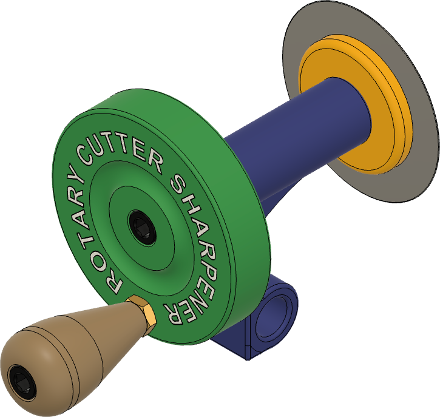
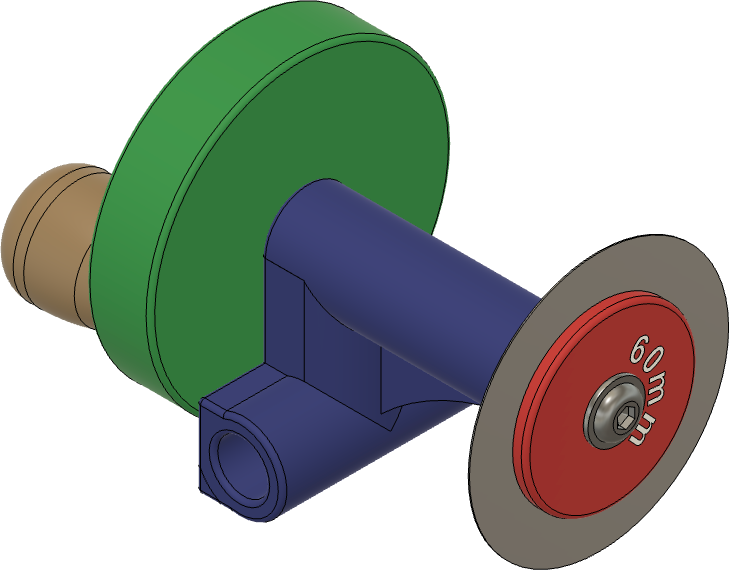
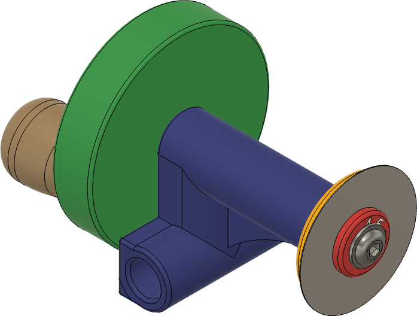
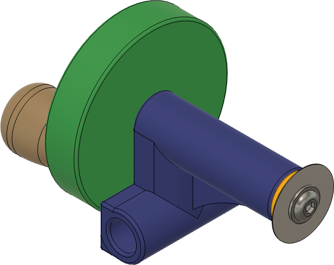

Overview

Rotary Cutter Jig

Sharpening a 60mm blade

Sharpening a 45mm blade

Sharpening a 28mm blade
Click on pictures to see larger images
I made the original version of this set as add-on parts for the Tormek SVD-185 or SVD-186 jig so I could sharpen rotary knives for my wife. The pieces added are 1) the hand wheel, 2) the bolt to hold it in place, and 3) the fender washers.
Since that original one, I've created one using mostly 3D-printed parts as shown in the pictures to the right.
Usage Notes
The process outlined on the Rotary Cutter page outlines the best approach.
Make safety a priority: It is not worth the risk.
This machine does not have a brain. You must use your own.
Safety Precautions
- When affixing the blade to the 10mm screw with the nut, be quite careful to not cut yourself on the blade.
- When affixing the screw to the drill, be quite careful to not cut yourself on the blade.
- Do not use the drill’s power to tighten the nut.
- Be sure to run the drill so that the nut tightens against the blade. Running it in the opposite direction will cause the nut to loosen, allowing the blade to flop around and become dangerous. If this happens, let the drill and blade spin down and then re-tighten the nut
- When cleaning the honing compound off the blade, DO NOT do that whilst rotating the blade in the drill. You may get lucky a few times, but at some point, the spining blade will somehow cut you badly.
Sources for Buying One
You can purchase one from Colvin Tools.
Notes on Making One
You can 3D print your own parts. The components are:
- Common Parts
- Rotary-Cutter-Sharpener-Sleeve.3mf (the blue part in the pictures above)
- Rotary-Cutter-Sharpener-Handle.3mf (the green part in the pictures above)
- Rotary-Cutter-Sharpener-Handle-Knob.3mf (the brown part in the pictures above)
- Parts Used for 45 & 60mm Blades
- Rotary-Cutter-Sharpener-Shaft-45-60mm.3mf (the yellow part in the pictures above)
- Rotary-Cutter-Sharpener-Adapters-45-60mm.3mf (the red part in the pictures above)
- Parts Used for 28mm Blades
- Rotary-Cutter-Sharpener-Shaft-28mm.3mf (the yellow part in the pictures above)
- Insted of an adapter, an M6-1.0 screw is used to hold the blade in place (McMaster-Carr p/n 97654A379)
You will also need these parts:
|
Item
|
Source
|
Part Number
|
Comments
|
|
Flanged Button Head Screw, M6-1.0 mm Thread, 10 mm Long, 18-8 Stainless Steel
|
McMaster-Carr
|
97654A379
|
Used to attach the Sharpener Adapter (red part) & blade to the Shaft (yellow part). Also used to hold the 28mm blade to the shaft used for that blade.
|
|
Socket Head Screw, M6-1.0 mm Thread, 16 mm Long, Black Oxide
|
McMaster-Carr
|
91290A321
|
Used to attach the Handle (green part) to the Shaft (yellow part).
|
|
Thin Hex Nut, M6-1.0 mm Thread Size, 3.2 mm High, Brass
|
McMaster-Carr
|
93187A250
|
Used to attach the Handle Knob (brown part) to the Handle (green part). This nut is tightened on the screw against the Handle, and is adjusted to allow the Handle Knob to spin freely.
|
|
Socket Head Screw, M6-1.0 mm Thread, 55 mm Long, Partially Threaded, Black Oxide
|
McMaster-Carr
|
91290A342
|
Used to attach the Handle Knob (brown part) to the Handle (green part).
|
Tools Needed
These tools are needed:
- 6mm-1.0 tap (e.g., McMaster-Carr p/n 8305A17) and
- Tap wrench (e.g., McMaster-Carr p/n 2546A23)
- 5mm Allen wrench (e.g., McMaster-Carr p/n 6958A15)
- 4mm Allen wrench (e.g., McMaster-Carr p/n 7289A15)
These tools are recommended:
- A thin 10mm wrench (e.g., McMaster-Carr p/n 54755A53 or 8393A49) is useful for tightening the brass nut against the handle. The nut is only 3.2mm thick, so a standard wrench does not have adequate space to fit.
More Information
Presentations

{kind=link}
{kind=link}
{kind=link}
{kind=link}